april 2007
Signal Workbench, Actilog Analysis
Introduction
This demo shows how you can use Signal WorkBench to find an appropriate analyses method for data collected with an human activity monitor.
ActiLog is ...
signals look like ...
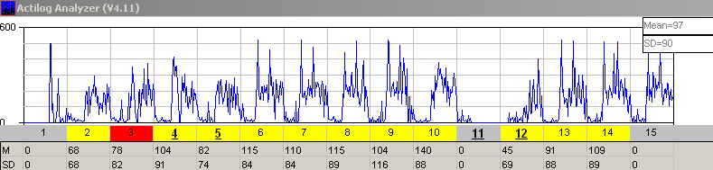
(1354a, ak=80)
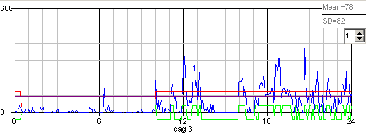 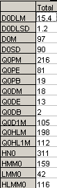

Signals
- Gaussian --> scheve verdeling
Starting the Calculation Tree
|
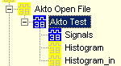 |
We just create some nodes, with more or less logical names. |
Main-Node
The main-node will eventually hold all the basic code, but to start we only need to read the datafile. The filename comes from the parent node, which gives us more flexibility during development of the code.
After the main-node has run once, all basic data will be available to the child-nodes. Just as "filename" is available as a global from the parent node.
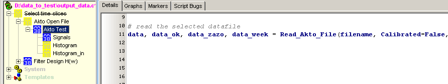
Selecting the datafile
Finally "selecting the datafile" will become part of the main program, but during development it's more convenient to put the data file selection in an extra node, on top of the main-node. The advantage of such an extra node is that you can run all nodes below, without the need to select the file each time you want to test a small piece of code.
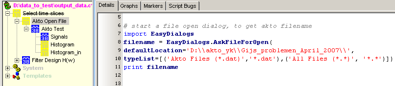
Experimental node
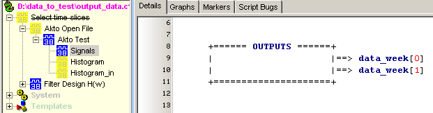
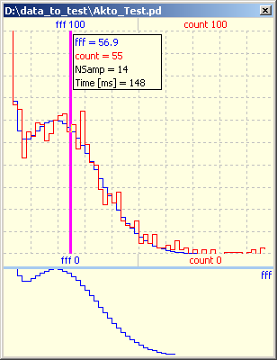
First we want to skip small signal, because they are not real activity and could be caused for example by moving your leg while sitting relaxed in a chair.
So we write the next script, and after pressing F9, we can see right away the results of the calculation. In the graph we've zoomed in, and we've given the calculated signal a little higher gain, so we get to see both signals well. So we see that the algorithm does what we wanted.
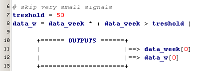
Because the data is only stored every 5 minutes, we can have different results for the same activity. Suppose we have an activity level of 300, during 5 minutes, this could have also been registered as activity level of 150 during 10 minutes, or could even been spread out over 15 minutes. So the idea is to find periods of activity and non-activity, determine the mean (or mean integrated over time ?) during an activity period and replace that activity period with it's mean.
So we extend our script with a check if the signal is larger than zero. We also introduce an intermediate variable "test_day", so we can easily look what the calculations will do if we select another day.
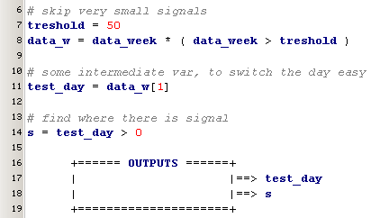 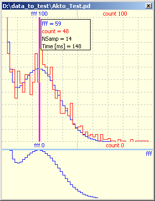
Now we can detect the edges of the activity periods, and of course as previous MatLab users we know and use the diff-function, ...
... which works slightly different ...
I've switched off the original signal in the display (right mouse menu) and we see some weird things (from a MatLab point of view),
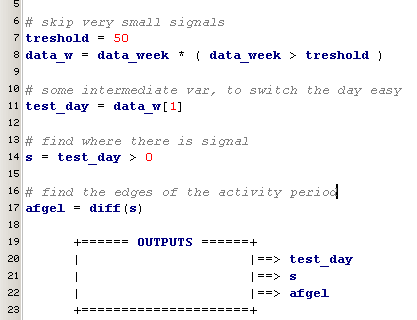 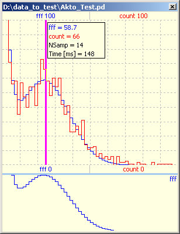
Let's first investigate in more detail what the signal "afgel" looks like,
this can be done by just typing a print command in the interactive window
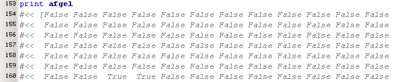
(bug: SWB displays floats if "afgel" is in output signals ???)
and we get a good demonstration of the better performance / optimization of SciPy. In MatLab all variables are floats and will stay float, in SciPy the variable is converted to the smallest possible one. So it's logical that the signal "s" can only take 2 values and therefor will be a boolean. Apparently SciPy can't increase the resulting variable size and therefor the signal "afgel=diff(s)" will also result in a boolean result, which will be True at all edges, whether positive or negative.
Now we are aware of this phenomena, the solution is simple. Now we also add an extra False at the beginning (there are numerous ways to do that), so the difference signal will be shifted to the right place.
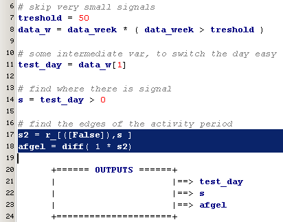 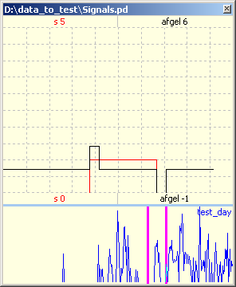
The next step is to compute the average over every active part of the signal. Now we put this together with the edge detection in one function which we'll place in our standard library. And this is how the function looks:
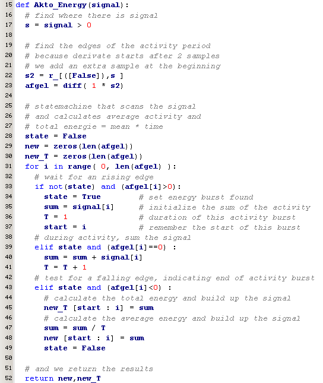
Now our test script will look much simpler and we can watch the result
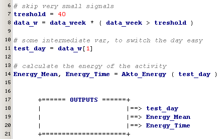 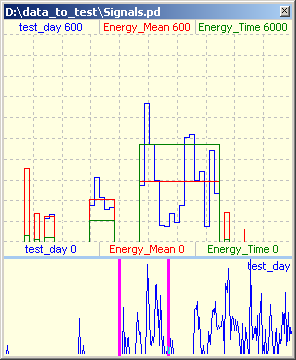
So it's time to view at a histogram, of the complete
1354a, ak=85, Not Calibrated Calibrated smooth calibrated
#<< snijpunt= 100.0
#<< [ tau / mean / SD / A / B ]
#<< [ 12.30548153 119.84717957 132.42905616 352.51517018 59.95836701]
#<< D:\Akto_yk\Gijs_problemen_April_2007\1354a.dat
#<< [ tau / mean / SD / A / B ]
#<< [ 17.9282202 150.36781469 118.01076737 317.14267291 58.93539309]
#<< [ tau / mean / SD / A / B ]
#<< [ 17.21361982 146.73730914 121.37234058 321.72739784 58.68596152]
Energy_mean
#<< [ tau / mean / SD / A / B ]
#<< [ 1. 170.67140106 38.24161208 1. 146.13630098]
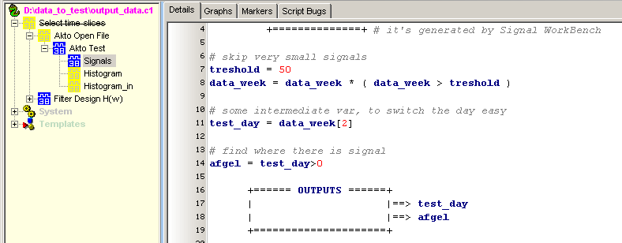
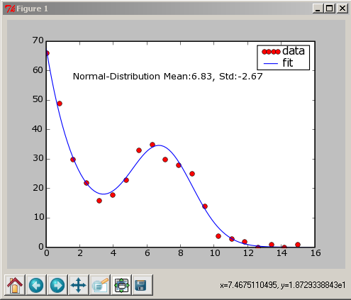
|
165(ijk) |
157 |
182 |
191 |
|
|
107 |
126 (+18%) |
103 (-4%) |
105 (-2%) |
Originele meting Lonneke |
|
119 |
123 (+3%) |
113 (-5%) |
109 (-8%) |
B= Nieuwe yking, kale lineair-regressie, over alle punten 165LB: 0.92 * MEET + -22.40 (R = 0.97) 157LB: 0.89 * MEET + -27.30 (R = 0.98) 182LB: 0.89 * MEET + -13.82 (R = 0.99) 191LB: 0.93 * MEET + -26.42 (R = 0.98) |
|
101 |
106 (+5%) |
98 (-3%) |
93 (-8%) |
New, alleen waarden (voor yk) tussen 30 .. 300 165LB: 0.58 * MEET + 18.61 (R = 0.81) 157LB: 0.70 * MEET + -8.94 (R = 0.91) 182LB: 0.78 * MEET + -13.32 (R = 0.97) 191LB: 0.72 * MEET + -6.52 (R = 0.92) |
|
New, alleen waarden (voor yk) tussen 5 .. 300 165LB: 0.63 * MEET + 6.10 (R = 0.87) 157LB: 0.70 * MEET + -11.07 (R = 0.94) 182LB: 0.77 * MEET + -13.36 (R = 0.98) 191LB: 0.72 * MEET + -7.89 (R = 0.94) |
||||
|
106 |
115 (+8%) |
102 (-4%) |
99 (-7%) |
New, alleen waarden (voor yk) tussen 5 .. 500 165LB: 0.76 * MEET + -7.44 (R = 0.92) 157LB: 0.81 * MEET + -20.99 (R = 0.96) 182LB: 0.84 * MEET + -19.18 (R = 0.98) 191LB: 0.81 * MEET + -15.47 (R = 0.96) |
|
119 |
124 |
114 |
108 |
B, maar nauwkeuriger yking |
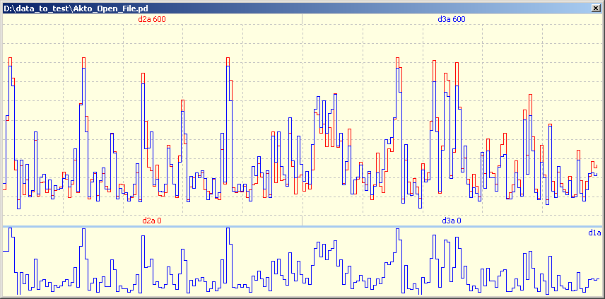
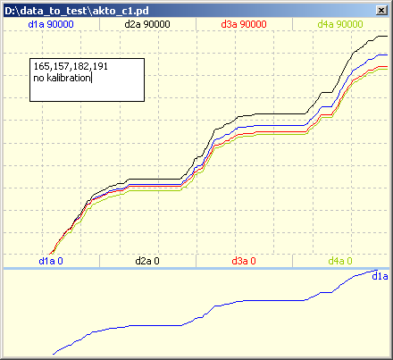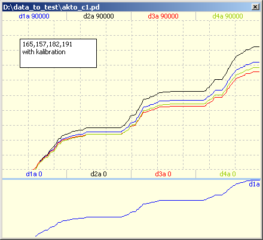
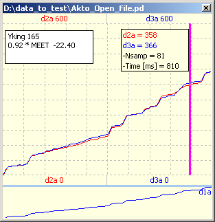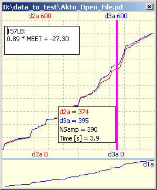
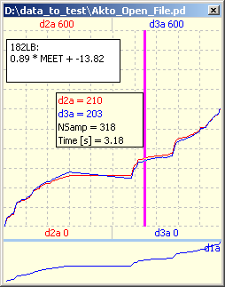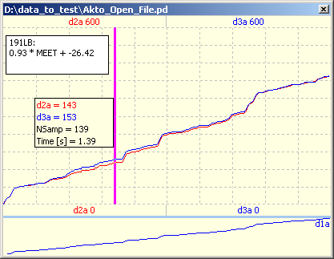
#<< Range 0 : 600
#<< 165LB: 0.92 * MEET + -23.11 (R = 0.97)
#<< 157LB: 0.89 * MEET + -27.95 (R = 0.98)
#<< 182LB: 0.93 * MEET + -24.18 (R = 0.99)
#<< 191LB: 0.93 * MEET + -26.74 (R = 0.98)
#<< Range 0 : 500
#<< 165LB: 0.76 * MEET + -7.03 (R = 0.93)
#<< 157LB: 0.80 * MEET + -18.93 (R = 0.96)
#<< 182LB: 0.82 * MEET + -15.97 (R = 0.98)
#<< 191LB: 0.80 * MEET + -15.06 (R = 0.96)
#<< Range 0 : 100
#<< 165LB: 0.31 * MEET + 18.97 (R = 0.64)
#<< 157LB: 0.51 * MEET + -1.86 (R = 0.88)
#<< 182LB: 0.61 * MEET + -4.73 (R = 0.92)
#<< 191LB: 0.50 * MEET + 3.74 (R = 0.83)
#<< Range 100 : 500
#<< 165LB: 0.91 * MEET + -33.31 (R = 0.95)
#<< 157LB: 0.84 * MEET + -28.09 (R = 0.93)
#<< 182LB: 0.92 * MEET + -40.99 (R = 0.97)
#<< 191LB: 0.85 * MEET + -21.86 (R = 0.95)
#<< Range 0 : 50
#<< 165LB: 0.11 * MEET + 14.02 (R = 0.48)
#<< 157LB: 0.33 * MEET + 3.86 (R = 0.78)
#<< 182LB: 0.41 * MEET + 0.99 (R = 0.80)
#<< 191LB: 0.29 * MEET + 9.18 (R = 0.66)
#<< Range 50 : 500
#<< 165LB: 0.85 * MEET + -17.92 (R = 0.95)
#<< 157LB: 0.84 * MEET + -29.17 (R = 0.95)
#<< 182LB: 0.88 * MEET + -29.76 (R = 0.98)
#<< 191LB: 0.84 * MEET + -21.73 (R = 0.95)
#<< ++++++++++
for fs in range(1,5):
MID = 30
gain1, offset1 = do_range_fileset (fs, 0, MID)
gain2, offset2 = do_range_fileset (fs, MID, 500)
if gain2<>gain1:
snijpunt = (offset1-offset2)/(gain2-gain1)
print 'snijpunt=',snijpunt
else: print "PROBLEMS"
data, data_ok1, data_zazo, data_week, gain0, offset0 = Read_Akto_File(filename3, Calibrated=False, Print_Info=False )
data = data_ok1.flatten()
# Berekening op de oude wijze
N = 0
SUM = 0
for i in range(len(data)):
if data[i]>2:
N = N + 1
SUM = SUM + data[i]/gain0 - offset0
#print "Sum", int(SUM / N)
# levert voor 165 / 157 / 182 / 191 = 120 / 140 / 110 / 116
# hetgeen goed overeenkomt met het aktometer programma
# nieuwe berekening met snijpunt
N = 0
NEWSUM = 0
for i in range(len(data)):
if data[i]>3:
N = N + 1
if data[i]<snijpunt: newdata = gain1 * data[i] + offset1
else: newdata = gain2 * data[i] + offset2
if newdata < 0: newdata = 0
NEWSUM = NEWSUM + newdata
"""
if data[i]>0:
N = N + 1
if data[i]<snijpunt: newdata = gain1 * data[i] + offset1
else: newdata = gain2 * data[i] + offset2
if newdata < 8: newdata = 0
NEWSUM = NEWSUM + newdata
"""
print "NEWSum", int(SUM / N), int(NEWSUM / N)
#<< Range 0 : 30
#<< 165LB: 0.23 * MEET + 5.54 (R = 0.61) Error = -1.000
#<< Range 30 : 500
#<< 165LB: 0.76 * MEET + -5.95 (R = 0.90) Error = 0.000
#<< snijpunt= 21.5211769688
#<< gain/offset= 1.45 1.0 1 49
#<< pppp
#<< NEWSum 127 137
#<< Range 0 : 30
#<< 157LB: 0.23 * MEET + 4.81 (R = 0.68) Error = 0.000
#<< Range 30 : 500
#<< 157LB: 0.84 * MEET + -28.47 (R = 0.95) Error = 0.000
#<< snijpunt= 55.3917322236
#<< gain/offset= 1.23 1.08 14 14
#<< pppp
#<< NEWSum 148 143
#<< Range 0 : 30
#<< 182LB: 0.29 * MEET + 3.20 (R = 0.71) Error = 0.000
#<< Range 30 : 500
#<< 182LB: 0.87 * MEET + -25.78 (R = 0.98) Error = 0.000
#<< snijpunt= 50.3903549304
#<< gain/offset= 1.36 1.0 11 50
#<< pppp
#<< NEWSum 119 132
#<< Range 0 : 30
#<< 191LB: 0.12 * MEET + 11.79 (R = 0.37) Error = 0.000
#<< Range 30 : 500
#<< 191LB: 0.83 * MEET + -20.46 (R = 0.96) Error = 0.000
#<< snijpunt= 45.0865841144
#<< gain/offset= 1.28 0.97 9 49
#<< pppp
#<< NEWSum 129 131
#<< Range 0 : 30 : 400
#<< Threshold = 10
#<< NEWSum 63 64 0.23 0.65 5.54 9.20
#<< NEWSum 75 68 0.23 0.75 4.81 -16.60
#<< NEWSum 58 62 0.29 0.81 3.20 -17.97
#<< NEWSum 62 62 0.12 0.77 11.79 -12.07
#<< Range 0 : 30 : 500
#<< Threshold = 10
#<< NEWSum 63 67 0.23 0.76 5.54 -5.95
#<< NEWSum 75 72 0.23 0.84 4.81 -28.47
#<< NEWSum 58 64 0.29 0.87 3.20 -25.78
#<< NEWSum 62 64 0.12 0.83 11.79 -20.46
#<< Range 0 : 40 : 500
#<< Threshold = 10
#<< NEWSum 63 71 0.11 0.84 11.31 -16.88
#<< NEWSum 75 72 0.30 0.84 3.93 -28.05
#<< NEWSum 58 64 0.36 0.88 2.20 -28.03
#<< NEWSum 62 64 0.20 0.84 11.02 -22.73
#<< Range 0 : 40 : 500
#<< Threshold = 3
#<< NEWSum 63 71 0.11 0.84 11.31 -16.88
#<< NEWSum 75 73 0.30 0.84 3.93 -28.05
#<< NEWSum 58 65 0.36 0.88 2.20 -28.03
#<< NEWSum 62 64 0.20 0.84 11.02 -22.73
#<< Range 0 : 50 : 500
#<< Threshold = 3
#<< NEWSum 63 71 0.11 0.85 14.02 -17.92
#<< NEWSum 75 73 0.33 0.84 3.86 -29.17
#<< NEWSum 58 64 0.41 0.88 0.99 -29.76
#<< NEWSum 62 64 0.29 0.84 9.18 -21.73
#<< Range 0 : 20 : 500
#<< Threshold = 3
#<< NEWSum 63 67 0.20 0.76 4.40 -6.62
#<< NEWSum 75 72 0.17 0.83 4.85 -26.57
#<< NEWSum 58 65 0.22 0.85 2.87 -21.99
#<< NEWSum 62 64 0.08 0.81 9.11 -16.53
#<< Range 0 : 30 : 500
#<< Threshold = 3
#<< NEWSum 63 68 0.23 0.76 5.54 -5.95
#<< NEWSum 75 73 0.23 0.84 4.81 -28.47
#<< NEWSum 58 65 0.29 0.87 3.20 -25.78
#<< NEWSum 62 64 0.12 0.83 11.79 -20.46
#<< Range 0 : 50 : 500
#<< Threshold = 3
#<< NEWSum 63 71 0.11 0.85 14.02 -17.92
#<< NEWSum 75 73 0.33 0.84 3.86 -29.17
#<< NEWSum 58 64 0.41 0.88 0.99 -29.76
#<< NEWSum 62 64 0.29 0.84 9.18 -21.73
#<< Range 0 : 50 : 500
#<< Threshold = 10
#<< NEWSum 63 71 0.11 0.85 14.02 -17.92
#<< NEWSum 75 72 0.33 0.84 3.86 -29.17
#<< NEWSum 58 64 0.41 0.88 0.99 -29.76
#<< NEWSum 62 64 0.29 0.84 9.18 -21.73
#<< Range 0 : 50 : 500
#<< Threshold = 0
#<< NEWSum 63 71 0.11 0.85 14.02 -17.92
#<< NEWSum 75 73 0.33 0.84 3.86 -29.17
#<< NEWSum 58 65 0.41 0.88 0.99 -29.76
#<< NEWSum 62 64 0.29 0.84 9.18 -21.73
#<< Range 0 : 50 : 550
#<< Threshold = 0
#<< NEWSum 63 73 0.11 0.91 14.02 -28.27
#<< NEWSum 75 75 0.33 0.91 3.86 -40.83
#<< NEWSum 58 66 0.41 0.96 0.99 -42.81
#<< NEWSum 62 67 0.29 0.92 9.18 -34.65
#<< Range 0 : 50 : 650
#<< Threshold = 0
#<< NEWSum 63 76 0.11 0.99 14.02 -41.43
#<< NEWSum 75 77 0.33 0.96 3.86 -50.05
#<< NEWSum 58 67 0.41 0.99 0.99 -48.04
#<< NEWSum 62 68 0.29 0.99 9.18 -45.55
#<< Range 0 : 50 : 600
#<< Threshold = 0
#<< NEWSum 63 76 0.11 0.99 14.02 -41.43
#<< NEWSum 75 77 0.33 0.96 3.86 -50.05
#<< NEWSum 58 67 0.41 0.99 0.99 -48.04
#<< NEWSum 62 68 0.29 0.99 9.18 -45.55
#<< Range 0 : 50 : 500
#<< Threshold = 0
#<< NEWSum 63 71 0.11 0.85 14.02 -17.92
#<< NEWSum 75 73 0.33 0.84 3.86 -29.17
#<< NEWSum 58 65 0.41 0.88 0.99 -29.76
#<< NEWSum 62 64 0.29 0.84 9.18 -21.73
#<< Range 0 : 50 : 500
#<< Threshold = 0
#<< NEWSum 63 71 0.11 0.85 14.02 -17.92
#<< NEWSum 75 73 0.33 0.84 3.86 -29.17
#<< NEWSum 58 65 0.41 0.88 0.99 -29.76
#<< NEWSum 62 64 0.29 0.84 9.18 -21.73
#<< Range 0 : 40 : 500
#<< Threshold = 0
#<< NEWSum 63 71 0.11 0.84 11.31 -16.88
#<< NEWSum 75 73 0.30 0.84 3.93 -28.05
#<< NEWSum 58 64 0.36 0.88 2.20 -28.03
#<< NEWSum 62 64 0.20 0.84 11.02 -22.73
#<< Range 0 : 30 : 500
#<< Threshold = 0
#<< NEWSum 63 68 0.23 0.76 5.54 -5.95
#<< NEWSum 75 72 0.23 0.84 4.81 -28.47
#<< NEWSum 58 65 0.29 0.87 3.20 -25.78
#<< NEWSum 62 64 0.12 0.83 11.79 -20.46
#<< Range 0 : 20 : 500
#<< Threshold = 0
#<< NEWSum 63 67 0.20 0.76 4.40 -6.62
#<< NEWSum 75 72 0.17 0.83 4.85 -26.57
#<< NEWSum 58 65 0.22 0.85 2.87 -21.99
#<< NEWSum 62 63 0.08 0.81 9.11 -16.53
{kind=link}